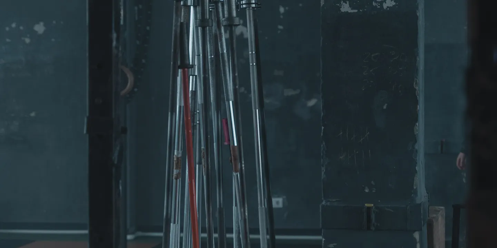

Sobre a FORGE FITNESS

Uma academia feita para a vida do bairro
Na história fictícia da FORGE FITNESS, tudo começou em 2019, quando dois profissionais de educação física decidiram criar um espaço de treino na Vila Mariana. A ideia era aproximar o acompanhamento profissional da rotina de quem mora e trabalha na região.
O nome FORGE representa essa construção diária: aprender um movimento, manter a frequência e avançar aos poucos. A academia cresceu com essa proposta, reunindo musculação e aulas coletivas em um mesmo lugar.
Nossa proposta
Ajudar cada pessoa a criar uma relação consistente com a atividade física, respeitando sua experiência, suas preferências e o tempo disponível para treinar.
- Acolhimento: espaço para iniciantes e para quem está retomando os treinos.
- Orientação: professores disponíveis no salão para explicar exercícios e ajustar a execução.
- Constância: planejamento de treino compatível com a sua rotina.
- Respeito: convivência cuidadosa, sem julgamentos sobre corpo ou desempenho.
O que você encontra por aqui
- Orientação inicial
- Uma conversa sobre seus objetivos e sua experiência para organizar o início dos treinos.
- Variedade de atividades
- Musculação, cardio e aulas coletivas para diferentes preferências de treino.
- Horários amplos
- Funcionamento desde cedo nos dias úteis e atendimento também aos fins de semana.
- Acompanhamento da rotina
- Revisões do treino com a equipe, conforme a frequência e a evolução de cada aluno.
Conheça o espaço
Converse com a recepção para visitar a academia e entender como funciona o acompanhamento.